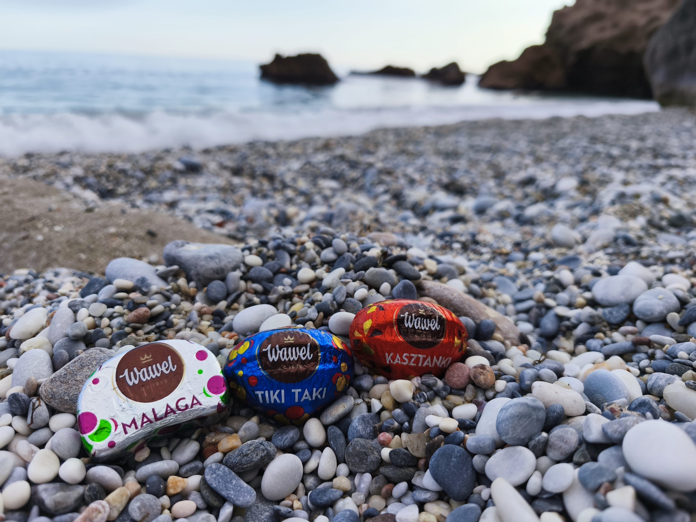

Andalusia: Where Every Corner Feels Like Summer
Recently, I had the chance to visit Andalusia — a region in southern Spain that completely stole my heart. One of the highlights of my trip was Malaga, a vibrant coastal city known for its sunny weather, beautiful beaches, and rich history. Walking through its streets, you can feel a unique mix of traditional Spanish culture and modern energy.
But what truly made this trip special was the nature. Long sandy beaches, turquoise water, and peaceful little towns hidden along the coast created the perfect atmosphere to slow down and just enjoy the moment.
One of the most unforgettable places I visited was El Torcal de Antequera — a natural reserve famous for its incredible rock formations shaped over millions of years. Walking there felt almost unreal, like stepping into another world.

Malaga
